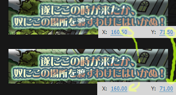

Pixalign

Makes sure objects have integer positions - that is, that they are aligned with the pixel grid to prevent them from looking fuzzy.
- Select the frames on the timeline that you would like to align.
- Alternatively, unselect all frames to align all items on the entire timeline.
- Run the command.
- Warning: Sometimes Flash immediately re-un-aligns the items, but running this command multiple times usually takes care of this.
オブジェクトを整数に直します。つまり、ピクセル格子に整列しますので、ぼやけた様子を直してくれます。
- タイムラインに、合わせたいフレームを選択してください。
- または、フレームを全部選択解除すると、タイムラインを全体的に実行します。
- コマンドを実行してください。
- ご注意 時々、フラッシュはすぐ元の非整数位置の戻しますが、
このコマンドを数回実行すると、通常に直します。
Recommended keyboard shortcut: Ctrl+Alt+Shift+X
おすすめのキーボードショートカット Ctrl+Alt+Shift+X